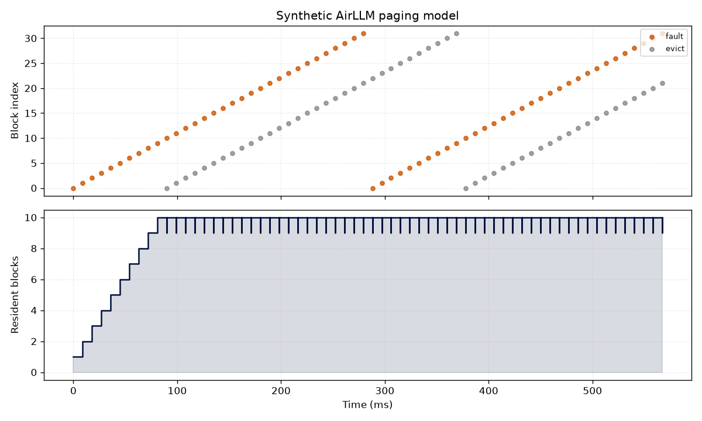

AirLLM streams a model one transformer block at a time, loading each block from disk (SafeTensors + mmap) right before it runs, then evicting it — exactly how an operating system pages memory between RAM and disk. Below: the measured/modeled trace.

Hit rate 0% over 118 events spanning 567 ms. A bounded resident set (10 blocks) is what lets a model far larger than RAM run locally.